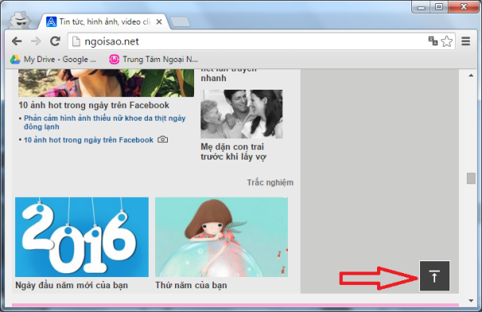

Cách tạo nút về đầu trang0:10 AM 2-May-2017
Bài viết này hướng dẫn các bạn tạo nút 'Lên đầu trang' hay còn gọi là Back to Top hay Scroll to Top. Mục đích giúp người duyệt web có thể di chuyển nhanh về đầu trang web.
Chức năng chính của thủ thuật này chính là tạo ra một nút mũi tên lên, nằm ở góc dưới bên phải màn hình. Mục đích giúp người duyệt web di chuyển nhanh về đầu trang. Ví dụ như trang ngoisao.net các bạn có thể xem ở hình sau:

Hôm nay tôi xin hướng dẫn các bạn làm một nút giống y như thế.
Có nhiều cách để thực hiện điều này, nhưng ở đây chúng ta làm với Jquery và CSS để tạo hiệu ứng chạy mượt mà (có cảm giác như có đang chạy lên chứ không phải nhảy về đầu trang).
Cách làm như sau:
Chú ý: Chúng ta có các file như sau: btn_top.css, btn_top.js, btn_top.png, btn_top.html
Bước 1: Tạo file btn_top.css như sau
.btn-top {
background-image: url(../img/btn_top.png);
background-repeat: no-repeat;
border: medium none;
bottom: 20px;
cursor: pointer;
display: none;
height: 50px;
outline: medium none;
padding: 0;
position: fixed;
right: 20px;
idth: 50px;
z-index: 9999;
}
Bước 2: Tạo file
btn_top.jsnhư sau:
jQuery(document).ready(function($){
if($(".btn-top").length > 0){
$(window).scroll(function () {
var e = $(window).scrollTop();
if (e > 300) {
$(".btn-top").show()
} else {
$(".btn-top").hide()
}
});
$(".btn-top").click(function () {
$('body,html').animate({
scrollTop: 0
})
})
}
});
Bước 3: Tạo file
btn_top.htmlnhư sau:
<!DOCTYPE > <html> <head> <meta http-equiv="Content-Type" content="text/html; charset=utf-8" /> <title>DEMO BACK TO TOP</title> <script src="https://code.jquery.com/jquery-1.11.3.js"></script> <script type="text/javascript" src="js/btn_top.js"></script> <link rel="stylesheet" href="css/btn_top.css" > </head> <body> <div class="footer"> <a class="btn-top" href="javascript:void(0);" title="Top" style="display: inline;"></a> </div> </body> </html>
Chú ý: Các bạn nhớ chèn thêm 1 file jquery-1.11.3.js vào nhé.
Chúc các bạn thành công !!!